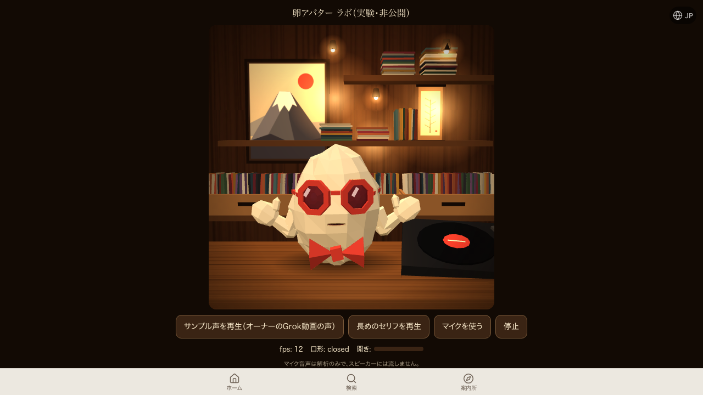

/cover-guide（案内所）の卵アバターが声の音量でSVGの口を動かす方式に置き換わって本番で稼働中。/lab/egg-avatarを、音を一切出さないChromium(--mute-audio、スピーカーに音は出ない)で自動操作し、サンプル声を再生して口の開き%を250msごとに実測した。口は実際に動いた（0%→100%→閉、口形もE/A/closedと変化）。t=0ms width=0% 口形=closed t=250ms width=100% 口形=E t=500ms width=100% 口形=E t=750ms width=0% 口形=closed t=1000ms width=32% 口形=E t=1250ms width=100% 口形=E t=1500ms width=96% 口形=A t=1750ms width=0% 口形=closed t=2000ms width=0% 口形=closed t=2250ms width=0% 口形=closed t=2500ms width=90% 口形=A t=2750ms〜t=5750ms width=0% 口形=closed（声が止んだ後）
